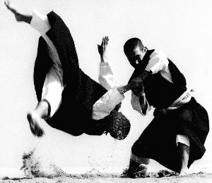

Kempo
Kenpō (拳法?) is the name of several Japanese martial arts. The word kenpō is a Japanese translation of the Chinese word "quánfǎ. This term is often informally transliterated as "kempo", as a result of applying Traditional Hepburn romanization. Kenpō has also been appropriated as a modern term: a name for multiple martial arts that developed in Hawaii due to cross-cultural exchange between practitioners of Ryukyuan martial arts, Chinese martial arts, Japanese martial arts and multiple additional influences. In the United States, kenpo is often referred to as Kenpo Karate. The most widespread style, the Tracy System of Kenpo, has it's origin in the teachings of James Mitose, William Kwai Sun Chow, and directly through Ed Parker.

Early History of Kempo
The American East Coast features a branch of Kenpo created by Nick Cerio, and later built upon and redefined by Fredrick J. Villari who brought the hybrid art of Shaolin Kempo Karate to the general public through his nationwide network of "Villari's Martial Arts Centers". The Villari system integrated the strengths of American Kenpo with the larger scope of movement and grappling available in Shaolin Kung Fu and Chin Na to create a highly unique American Kenpo offshoot system.
Kempo in the present and Future
The Kenpo Karate that was later developed by Ed Parker became the system of American Kenpo Karate. It employs a blend of Chinese circular movements and hard linear movements, producing an effective self defense system. Parker and his students created techniques with names such as Thundering Hammers, Five Swords, Prance Of The Tiger, and Flashing Mace to provide memorization tools to the student.
Visit this link:Wikpedia Reference for Kempofor more reference material.